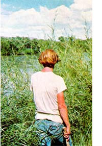
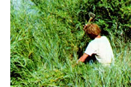
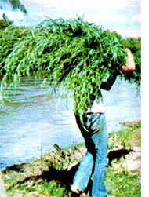
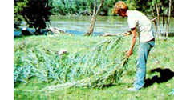
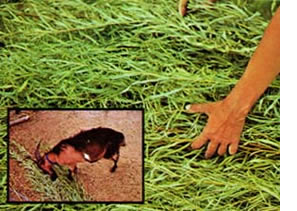

It's certainly not news that the past summer was an exceptionally dry one in many parts of the country ... so dry that a great many back-to-thel-anders lost all or a portion of the hay they intended to feed their livestock during the coming winter. What is news to a lot of folks, though, is that there still are at least three possible shoestring ways for you to provide forage for your goats, cows, and other beasts during the cold months ahead ... even if your summer crop of hay did burn out in the drought.
For some time now, I've been feeding my goats baled hay that I've "bought" with honey . .. simply because it's a lot easier for me to produce honey than hay, and three pounds of my homestead sweetener buys a 75-pound bale (enough dried vegetation to feed one goat for a couple of weeks). "Why should I bother to make my own hay?" I've always said to myself.
Always-that is-until last summer, when I started thinking: What would I do if the local hay supply suddenly dried up? Could I make my own? How much of a hassle would it be? Being a firm believer in contingency planning, I decided to answer these questions once and for all. In the process of answering them, I came up with three highly satisfactory alternatives to boughten fodder: willow hay. weed hay, and winter pasture.
Willow is an excellent forage crop: All kinds of animals-goats, cattle, beavers, etc-love it. Unlike grass, clover, and other hay crops-which become woody and unpalatable after they bloom-willow blooms in early spring, then spends the rest of the summer sending out succulent new growth.
It so happened that I knew of an excellent foraging spot where-several years ago-my father had bulldozed a road through a willow grove that'd grown up alongside a river. To keep the weedlike trees from completely engulfing the path, Dad had resorted to spraying the cleared area with herbicide several times each summer. Aha! I saw the perfect opportunity to do a good deed for my dad, my goats, and the environment . . . all at once.
"If you'll refrain from spraying this year," I told my father, "I'll clear your road of willows at the end of the summer."
Dad took me up on my offer and-come August-I found his road lined with 8'-tall willow shoots. Could I harvest them? There was an easy way to find out: I sharpened my hatchet, waded into the cool, shady thicket, and started chopping.
The work went quickly. (The cool shade, nearby singing birds, and gurgling water helped a lot.) All I did was kneel down, grab as many shoots in one hand as I could, and slice away. Each swipe brought down a sizable portion of foliage, which I then piled to one side as I went along. (Beats the old swing-the-scythe-in-the-pasture routine any day!)
Whenever I got tired of chopping, I combined the piles of fresh-cut willow at my side, hefted the foliage onto my back,
and carried the load to a goat-free pasture, where I laid the stalks out to dry in the sun. After a couple days, it was a simple task to carry the dried vegetation (which -by then-weighed only a small fraction of what it had weighed originally) to a shed for storage.
The goats had a feast! They eagerly consumed all the leaves (of course) and the top halves of the stalks, leaving just the woody butts behind. Eight hours' work (spread out over a week or so of cold mornings) had produced a two-week supply of hay for my three goats . . . a pretty good deal, if you ask me. Not that I relish the thought of gathering a whole winter's supply of hay this way ... I don't. But I could do it if I had to. And that's what I wanted to know in the first place.
Another excellent source of free hay, I've found, is the tall-growing annual weeds (such as amaranth, lamb's-quarters, and wild sunflower). I let these "volunteer feedstuffs" grow up good and tall, then-after a hard rain softens the ground-yank the plants out by the roots and lay 'em in a sunny spot to dry before passing them on to my caprine friends.
It's best to harvest as many of these weeds as you can, because of the way they shrink as they dry. (Believe it or not, an enormous 6'-tall amaranth-when dried-will occupy a hungry goat for only about five minutes!)
The least expensive and easiest-to-provide hay substitute of all, of course, is winter pasture. The main requirements here are [1] plenty of grazing area (the more the better, since grass grows slowly -if at all-during the cold months) and [2] a mild winter climate.
The trick is to set aside a large pasture during late summer, fertilize the area heavily, and let it grow thick and lush during the cool, damp days of fall. Then-in early winter, after the other pastures have begun to thin out-you can turn your beasts loose in their special winter grazing area. Providing you've let the grass grow good and thick, your animals will graze on the pasturage well into the winter (even after the grass has turned brown and dry from the cold). If the field is big enough-and your animals few enoughthe beasts will still be working on it by the time spring rolls around.
This method of feeding livestock worked exceedingly well for us several years ago, when we were living in the Missouri Ozarks. Once, in fact, we wintered four goats this way clear to spring on only three bales of supplemental hay! Our nannies remained perfectly healthy the whole time, and all gave birth to twins the following spring.
It seems to me that with a little work and advance planning, almost any homesteader who wants to can easily supply his livestock with all the winter forage they need, even in an exceptionally dry year, without buying (or bartering trade goods for) baled hay. It's certainly a good feeling to know (as I do) that even if you have to make do with willow and weed hay, you can. And, considering how dry it's been over much of the country this past summer, that's valuable knowledge to have.
|
 |
 |
 |
|
 |
 |
|